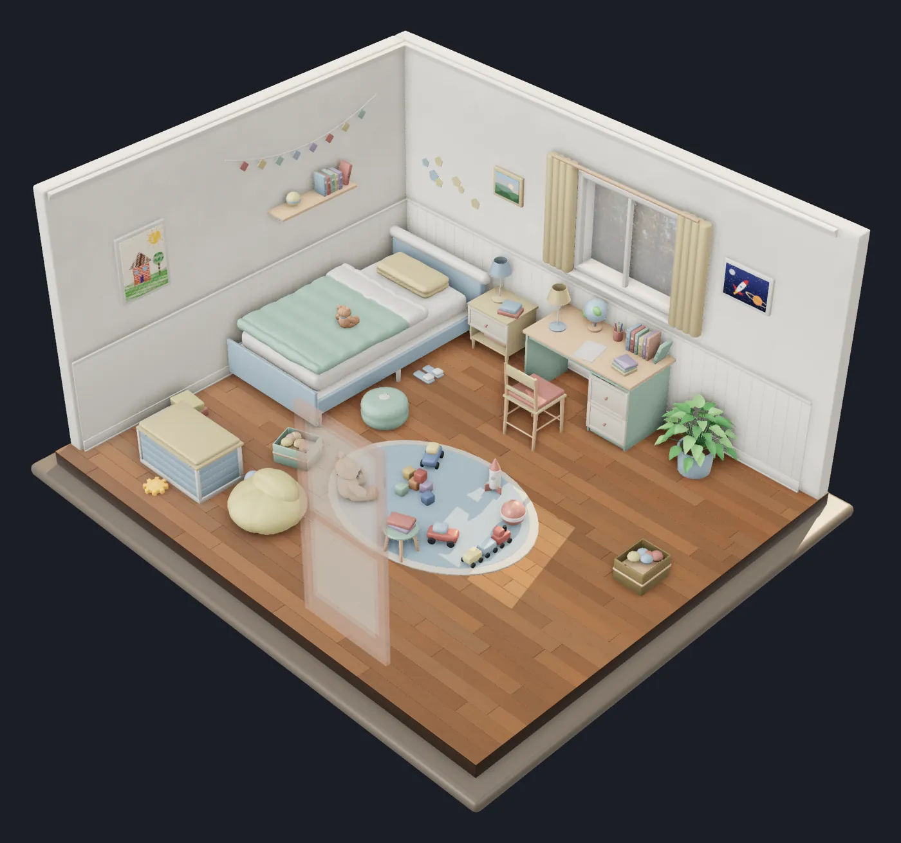
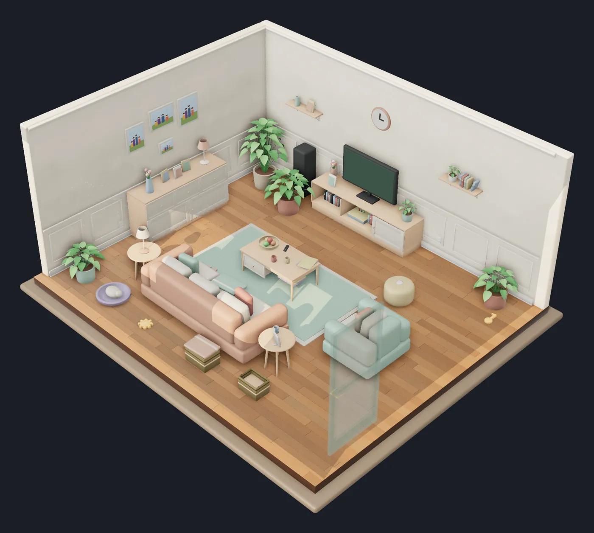
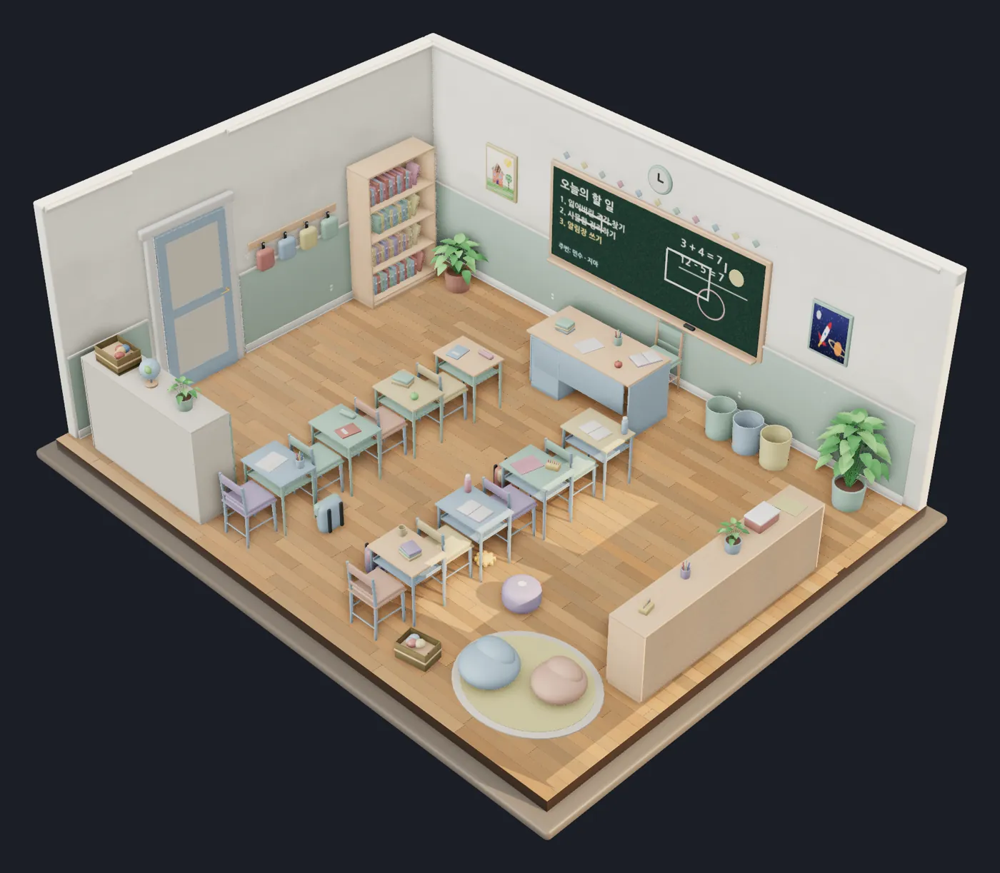
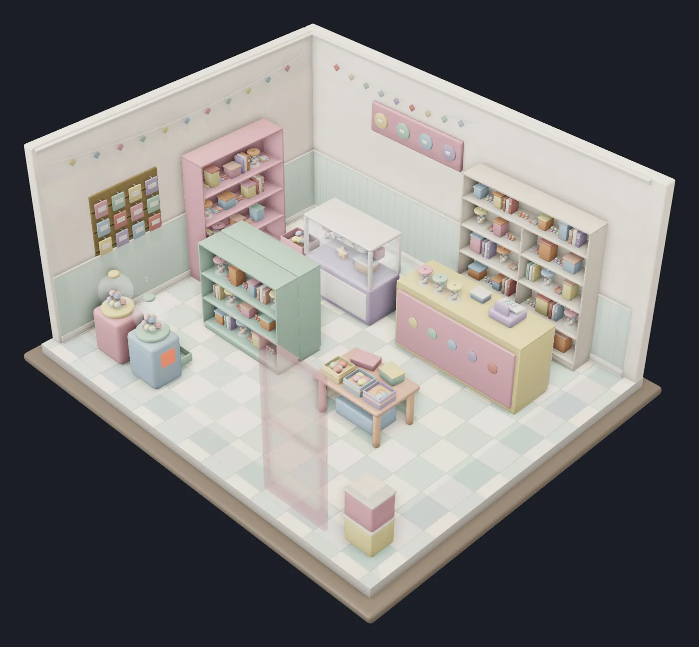
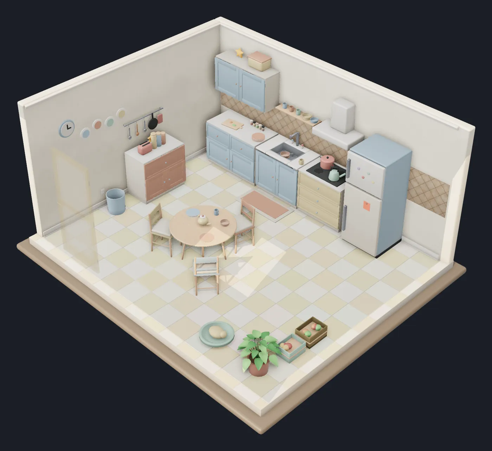

게임 · 2026 · 프로토타입
잃어버린 조각 — 3D 방탈출
미니어처 모형(디오라마)처럼 생긴 작은 방을 손으로 돌려 보듯 살피며, 방마다 숨겨진 조각 3개를 찾아 문을 여는 방탈출 게임입니다. 설치 없이 브라우저에서 바로 플레이할 수 있습니다(컴퓨터·휴대폰).
한눈에 보기
무엇인가요
인터넷 창에서 바로 하는 3D 방탈출 게임입니다. 방 전체가 책상 위의 작은 모형처럼 보여서, 이리저리 돌려 보며 숨은 물건을 찾습니다.
어떻게 플레이하나요
마우스로 방을 끌어 돌리고 휠로 확대·축소합니다(휴대폰은 손가락으로). 서랍을 열고 물건을 집어 보며 숨겨진 조각을 찾습니다.
목표
방마다 조각 3개를 찾으면 출구 문이 열립니다. 방 5개를 모두 나가면 엔딩입니다.
지금 상태 · 프로토타입
방 5개를 모두 플레이할 수 있는 시험판입니다. 조각 찾기 말고 다른 퍼즐과 이야기는 아직 적습니다.
방 둘러보기

01 · 남자아이의 방

02 · 거실

03 · 학교 교실

04 · 문방구

05 · 부엌
주요 기능
- 방 5개(남자아이의 방 → 거실 → 학교 교실 → 문방구 → 부엌)를 차례로 탈출하면 엔딩
- 방마다 조각 3개를 찾으면 출구 문이 열림. 서랍·사물함을 열고, 뽑기 기계 손잡이를 돌리고, 유리 진열장 문을 밀어 열어야 나오는 조각도 있음
- 방을 마우스로 끌어 한 바퀴(360°) 돌리고, 확대·축소하며 가구 뒤와 틈새를 살펴봄
- 소품을 집어 들고 다니거나 던질 수 있고, 클릭하면 크게 띄워 돌려 보는 상세 보기가 열림. 일부 장난감은 직접 움직여 볼 수 있음
- 창으로 드는 햇빛, 가구 아래 그늘, 인형의 털까지 표현한 실감 나는 화면을 실시간으로 그림
- 왼쪽 위 번호를 누르면 어느 방이든 바로 이동. 휴대폰에서는 두 손가락으로 확대·이동
남은 문제와 다음 할 일
- 시험판 단계라 조각 찾기 외의 퍼즐과 이야기 연출은 아직 적습니다.
- 화면을 실감 나게 그리는 만큼, 성능이 낮은 기기에서는 느릴 수 있습니다.
어려운 말 풀이
- 방탈출
- 방 안의 단서를 찾아 문을 열고 나가는 퍼즐 게임.
- 디오라마
- 한 장면을 작게 줄여 만든 입체 모형.
- 렌더(렌더링)
- 3D 장면을 화면 그림으로 그려 내는 일.
- Three.js
- 인터넷 창(브라우저)에서 3D 화면을 그리게 해 주는 도구.
- Blender
- 3D 모형을 만드는 무료 프로그램.
- GitHub Pages
- 만든 웹사이트를 무료로 인터넷에 올려 주는 서비스.
사용한 기술과 맡은 일
Three.js · TypeScript · Vite · Blender · GitHub Pages
게임 기획방·퍼즐 설계3D 공간 연출
개인 프로젝트 · 기획과 코드 작성 · AI 코딩 도우미(Claude Code)와 함께 작업 · 코드는 비공개